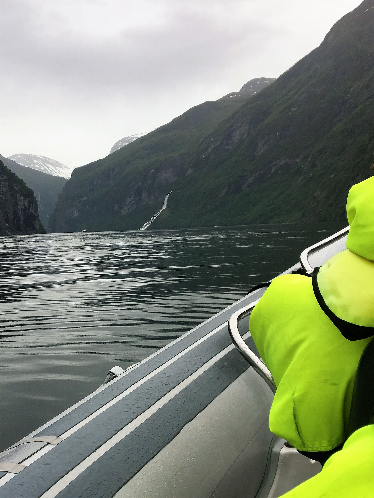
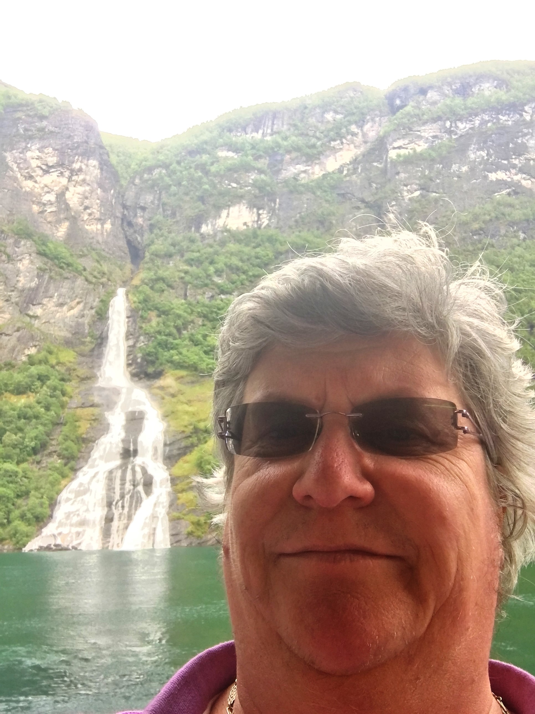
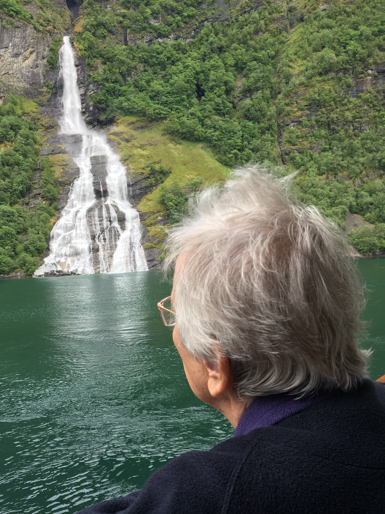

Norway Cruise 2017
Tuesday June 6th 2017

Aurora entered Breisunddjupet with the pilot already onboard. Aurora proceeded into Storfjorden.
She then passed through Sunnylvsfjorden before entering Geirangerfjord. Once Aurora was at the end of Geirangerfjord, she swung
her bow to port to make the final approach to the mooring position. On completion of the swing, Aurora let go her anchor forward
and sent 4 lines to a bollard on the shore down aft. Whilst Aurora was making fast, ships tenders were launched and the pontoons
were rigged.
The coastal settlement of Geiranger lies at the heart of the UNESCO World Heritage Listed Geirangerfjord. Year round it has a
population of 300 residents, but welcomes over 160 cruise ships and 600,000 tourists each year. Despite the tourist numbers,
it's a picturesque village of wooden houses, snuggled into the base of the mountains.
The Geirangerfjord is a branch of the Synnulvsfjord, which is a branch of the Storfjord. Geiranger is 16km long, 258 metres at
its deepest, and 500m at its narrowest. It has two waterfalls facing each other, one on each side of the fjord, De Syv Sostre, or Seven
Sisters Waterfall, and the Suitor waterfall. It is said that the Suitor tried to woo the Sisters, was spurned, and took to the bottle,
which can be seen outlined in the water.

After our usual breakfast, I left Mum in our suite, and making use of my go to the front of the queue card, given to suite
occupants, took the lift to the front of the queue, ignored the filthy looks coming from the people who had had to wait in a lounge
and queue down the srairs. The step of the boat pontoon wasn't that big, as we got onto one of the survival boats that were
doubling up as tenders. A member of staff was positioned on board to assist if there were any difficulties. It was a little
disconcerting to see that it was our wine waiter. A large German ship had arrived before us, and they were using the pontoon
bridge to disembark, so they didn't have to use tenders. The other ship which arrived after us was moored further away from the
village of Geiranger, and although part of the Italian Aida group, appeared to be full of Japanese tourists.
Geiranger is very small, with one hotel but multiple tat shops. A lot of people had arranged to go on organised bus trips booked onboard.
For those that hadn't the alternative was one of the double decket sightseeing buses, that took in most of the sites further out of town.
Some had booked to go to the Fydal Gorge Viewpoint to look down on the ship, then passing on up to Mount Dalsnibba. Others were going up to the
Eagle's Bend Viewpoint. It is set at the top of a series of 11 hairpin bends. This is the only main road out of Geiranfer to the rest
of Norway, and in winter is usbject to avalanche, which means the only way out of town is by boat.

I had booked a trip on a Rigid Inflatable Boat (RIB), which was going to take us out into the fjord, at speed to get up close and
personal with the two waterfalls. We were taken to a boat house where we put on our survival suits, life-jackets and protective glasses
for those already wearing any. We walked through Geiranger to reach the pier where the RIB's were waiting, getting some very funny
looks for the way we were dressed. Our RIB was driven by Sven, from Sweden. We sat 18 to a RIB in rows of three. I was sat next to a
lady with a Spanish husband. She was having to translate whatever Sven said to Spanish.
We set off slowly, passing by Aurora, and sped up as we made our way out towards the waterfalls. Sven pointed out old, abandoned farms
on the cliffsides. Some of them where used as safe houses by the Resistance in WW2. Others could only be reached by ladder, which
was pulled up whenever the tax collectors came calling. Apparently, the kids from one farm lived equidistant from Geiranger and the
next village. They went to school by sail boat, so the school they went to was determined by the wind direction. We went right up to
the bottom of both of the waterfalls, and had spectacular views of the fjord from water height. on the way back to the pier, Sven
pointed out a rock formation that is known as the Troll of Geiranger.
Once the last tender returned to the ship at 5.30pm, and the passengers and crew embarked, the tenders were secured for sea. Then all lines were let
go aft and the anchor heaved up forward. The Captain made the decision to pirouette the ship during the outbound transit between the Sevin
Sisters and the Suitor, allowing a fantastic opportunity to take in the beauty of the fjords through 360 degrees. Aurora followed
reciprocal courses out through the fjords, and once cleared, set various southerly course towards Bergen.
{kind=link}
{kind=link}
{kind=link}
{kind=link}
{kind=link}
{kind=link}
{kind=link}
{kind=link}